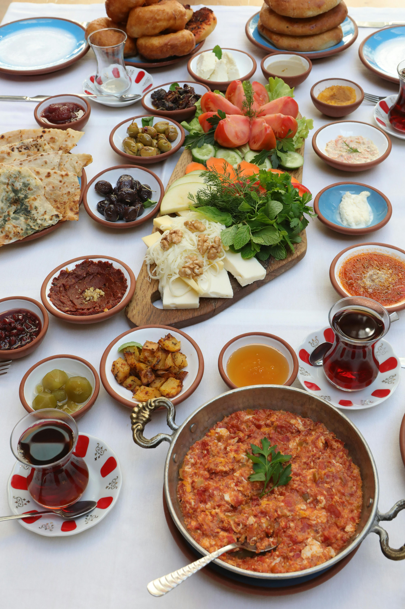

Menemen

Description
Menemen is a traditional Turkish breakfast dish made with eggs, tomatoes, peppers, and spices. It is soft, slightly runny, and bursting with flavor. Typically served with warm, crusty bread, it is a staple of Turkish mornings. Quick to prepare and endlessly customizable, Menemen can be enjoyed as a simple dish or enriched with ingredients like cheese, sausage, or onions.
Ingredients
- 2 tbsp olive oil
- 1 small onion, finely chopped (optional, but adds depth of flavor)
- 1 green bell pepper, chopped
- 2 medium tomatoes, diced
- 1 tsp red pepper flakes (adjust to taste)
- Salt and black pepper, to taste
- 2-3 eggs
- Fresh parsley, chopped (for garnish)
- Feta cheese (optional, for extra richness)
- Turkish bread or pita, for serving
Steps
- Heat the olive oil in a pan over medium heat.
- Sauté the onions (if using) and bell pepper until softened.
- Add the diced tomatoes and cook for about 5 minutes, stirring occasionally, until they break down and release their juices.
- Season with red pepper flakes, salt, and black pepper. Adjust to taste.
- Crack the eggs directly into the pan. Stir gently for a creamy texture or leave whole for a more traditional presentation.
- Cook until the eggs are just set, but still soft. Avoid overcooking.
- Garnish with fresh parsley and crumbled feta cheese if using.
- Serve immediately with warm Turkish bread or pita for dipping.
Home